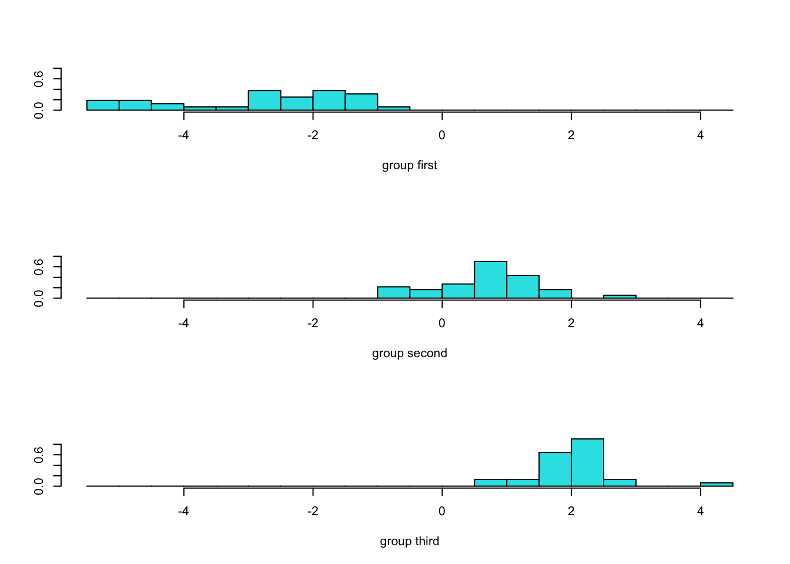
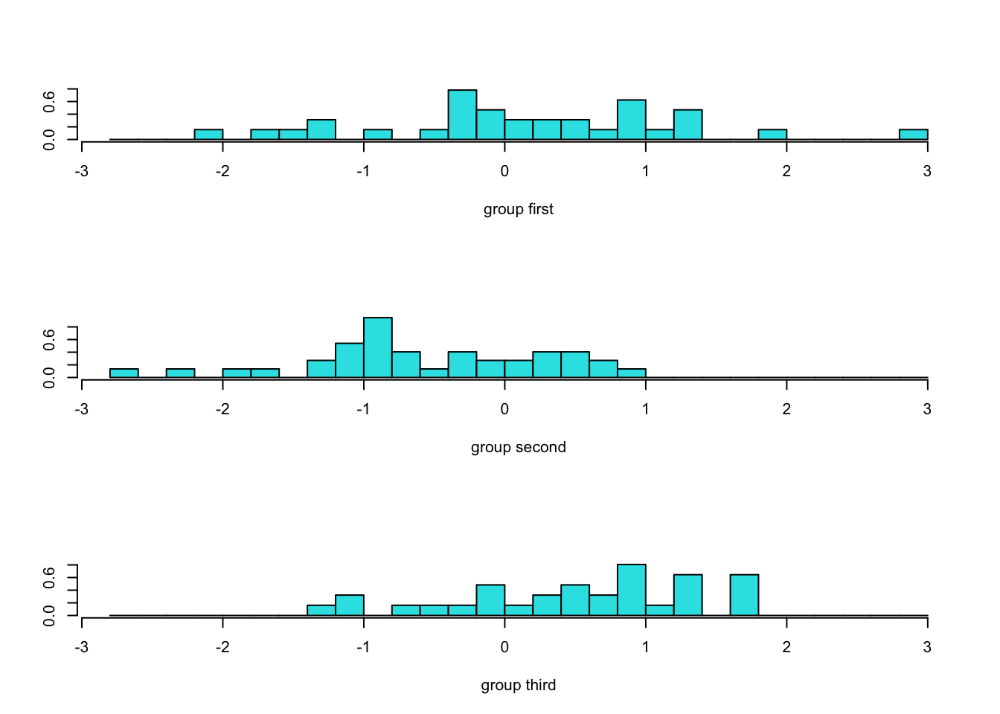
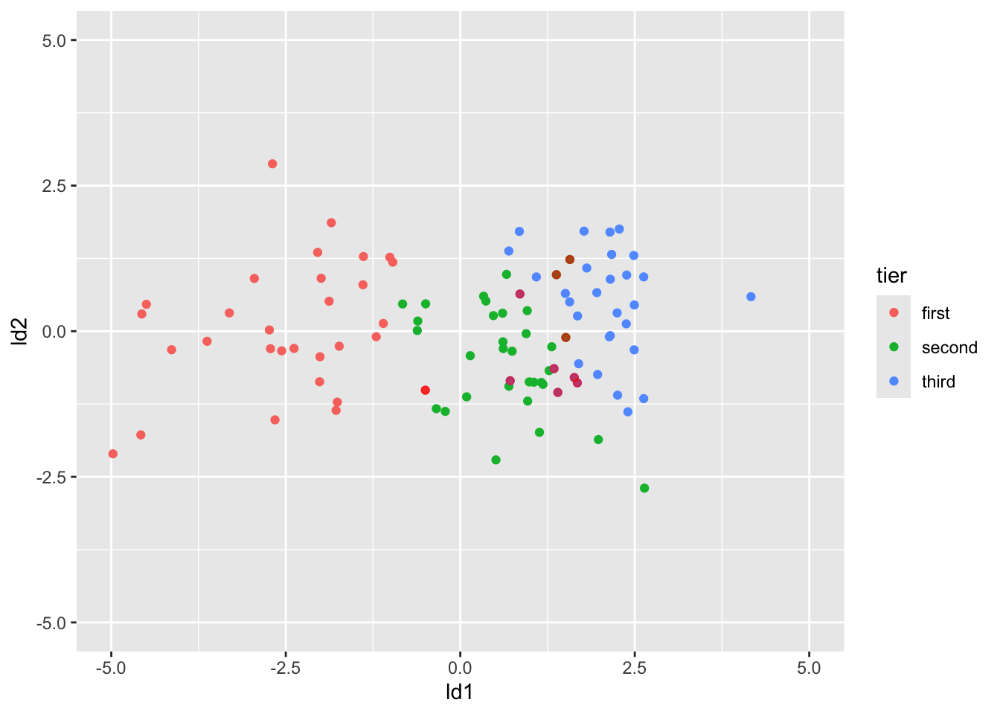
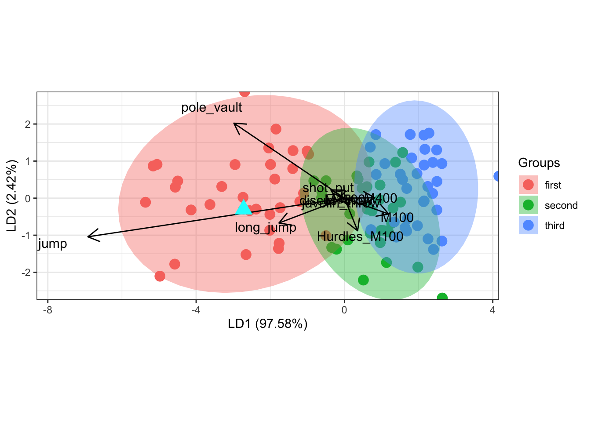

install.packages("ggplot2")
install.packages("tidyverse")
install.packages("MASS")
install.packages("klaR")
install.packages("devtools")
install.packages("psych")
install.packages("MVN")
install.packages("biotools")十项全能运动员判别分析
安装包
加载包
library(ggplot2)
library(tidyverse)
library(psych)
library(biotools)
library(MVN)数据文件

 点击下载数据文件: decathlon.xlsx
点击下载数据文件: decathlon.xlsx 导入数据
library(readxl)
decathlon <- read_excel("decathlon.xlsx",
col_types = c("numeric", "text", "numeric",
"numeric", rep("text", 3), rep("numeric", 3), "text",
rep("numeric", 11)))创建分类变量
library(tidyverse)
library(DescTools)
decathlon <- decathlon %>% mutate(tier = case_when(
rank %[]% c(1,33) ~ "first",
rank %[]% c(34,66) ~ "second",
rank %[]% c(67,100) ~ "third",
))多元正态检验
decathlon %>%
filter(tier == "first") %>%
dplyr::select(M100:javelin_throw) %>%
MVN::mardia() Test Statistic p.value Method
1 Mardia Skewness 182.182632 0.97033157 asymptotic
2 Mardia Kurtosis -1.844624 0.06509221 asymptoticdecathlon %>%
filter(tier == "second") %>%
dplyr::select(M100:javelin_throw) %>%
MVN::mardia() Test Statistic p.value Method
1 Mardia Skewness 260.62023080 0.03144084 asymptotic
2 Mardia Kurtosis 0.03828022 0.96946426 asymptoticdecathlon %>%
filter(tier == "third") %>%
dplyr::select(M100:javelin_throw) %>%
MVN::mardia() Test Statistic p.value Method
1 Mardia Skewness 226.3857853 0.3694740 asymptotic
2 Mardia Kurtosis -0.2327665 0.8159428 asymptotic检验协方差矩阵是否相等
df <- decathlon %>%
dplyr::select(M100:tier) %>%
mutate(tier = as.factor(tier)) %>%
as.data.frame()
boxM(df[, -11], df[, 11])
Box's M-test for Homogeneity of Covariance Matrices
data: df[, -11]
Chi-Sq (approx.) = 169.13, df = 110, p-value = 0.0002509建立判别函数
library(MASS)
model <- lda(tier ~ M100 + Hurdles_M100 + M400 + M1500 +
long_jump + high_jump + pole_vault +
shot_put + discus_thow + javelin_throw, decathlon)
modelCall:
lda(tier ~ M100 + Hurdles_M100 + M400 + M1500 + long_jump + high_jump +
pole_vault + shot_put + discus_thow + javelin_throw, data = decathlon)
Prior probabilities of groups:
first second third
0.33 0.33 0.34
Group means:
M100 Hurdles_M100 M400 M1500 long_jump high_jump pole_vault
first 10.82909 14.51606 48.66818 277.9918 7.452424 2.006970 4.924242
second 11.05091 14.76273 49.88515 280.3267 7.202727 1.968182 4.668485
third 11.04735 14.72765 50.16412 278.9579 7.139706 1.946471 4.660882
shot_put discus_thow javelin_throw
first 14.48636 44.79182 59.49242
second 13.97667 43.39879 58.46515
third 13.78294 41.44118 54.27412
Coefficients of linear discriminants:
LD1 LD2
M100 1.18999529 -0.42663574
Hurdles_M100 0.35551226 -0.88005615
M400 0.81924845 0.01025378
M1500 0.01210876 -0.01730195
long_jump -1.76643422 -0.67067804
high_jump -6.92011101 -1.04246407
pole_vault -2.98252729 2.02264320
shot_put -0.36594939 0.22228646
discus_thow -0.18572931 -0.06791697
javelin_throw -0.07878029 -0.12571473
Proportion of trace:
LD1 LD2
0.9758 0.0242 预测样本中个案的类别
model.predict <- predict(model, decathlon)
decathlon$predict <- model.predict$class评估预测效果
decathlon$ld1 <- model.predict$x[,1]
decathlon$ld2 <- model.predict$x[,2]
# 对比个案的观测类别的预测类别
table(decathlon$tier, decathlon$predict)
first second third
first 32 1 0
second 0 30 3
third 0 6 28# 计算预测正确率
mean(decathlon$tier == decathlon$predict)[1] 0.9可视化
判别函数得分直方图
ldahist(model.predict$x[,1], model.predict$class)
ldahist(model.predict$x[,2], model.predict$class)
标记错误的个案
decathlon$right <- decathlon$tier == decathlon$predict
wrong_cases <- decathlon %>%
filter(decathlon$right == FALSE)
wrong_cases# A tibble: 10 × 27
rank COMPETITOR `year of birth` Age Nationality country Continent
<dbl> <chr> <dbl> <dbl> <chr> <chr> <chr>
1 32 Martin ROE 1992 27 NOR Norway Europe
2 54 Akihiko NAKAMURA 1990 29 JPN Japan Asia
3 60 Ludovic BESSON 1998 21 FRA France Europe
4 65 Makenson GLETTY 1999 20 FRA France Europe
5 70 John LANE 1989 30 GBR United … Europe
6 71 Rik TAAM 1997 22 NED netherl… Europe
7 72 Nick GUERRANT 1999 20 USA United … North am…
8 82 Kazuya KAWASAKI 1992 27 JPN Japan Asia
9 85 Elmo SAVOLA 1995 24 FIN Finland Europe
10 92 Aleksandar GRNOVIC 1996 23 SRB Serbia Europe
# ℹ 20 more variables: Continent_code <dbl>, continent_G3 <dbl>,
# continent_G4 <dbl>, VENUE <chr>, MARK <dbl>, M100 <dbl>,
# Hurdles_M100 <dbl>, M400 <dbl>, M1500 <dbl>, long_jump <dbl>,
# high_jump <dbl>, pole_vault <dbl>, shot_put <dbl>, discus_thow <dbl>,
# javelin_throw <dbl>, tier <chr>, predict <fct>, ld1 <dbl>, ld2 <dbl>,
# right <lgl>decathlon %>% ggplot(aes(ld1, ld2, col = tier))+
geom_point()+
geom_point(data = wrong_cases,
aes(ld1, ld2),
col = "red", alpha = 0.6)+
ylim(-5,5)+
xlim(-5,5)
判别函数得分散点图，按类别着色
library(ggord)
ggord(model, decathlon$tier)预测新个案
new_case <- data.frame(
M100 = 10.73,
Hurdles_M100 = 15.34,
M400 = 47.93,
M1500 = 288.58,
long_jump = 7.58,
high_jump = 2.06,
pole_vault = 5.10,
shot_put = 14.28,
discus_thow = 36.93,
javelin_throw = 61.43
)
predict(model, new_case)$class
[1] first
Levels: first second third
$posterior
first second third
1 0.9967666 0.003214922 1.845589e-05
$x
LD1 LD2
1 -2.719559 -0.3001785new_pred <- predict(model, new_case)
new_scores <- new_pred$x # 提取LD1和LD2得分
new_class <- new_pred$class # 提取预测类别在判别函数得分散点图中标记新个案
# 绘制基本ggord图
ggord(model, decathlon$tier) +
geom_point(data = data.frame(LD1 = new_scores[,1],
LD2 = new_scores[,2],
tier = new_class),
aes(x = LD1, y = LD2),
size = 5, shape = 17, color = "cyan") # 用大三角形标记新点